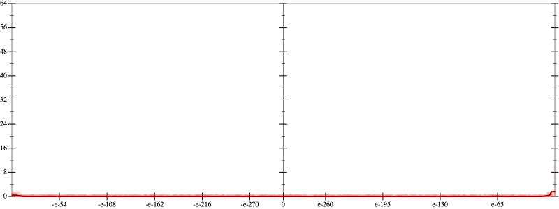
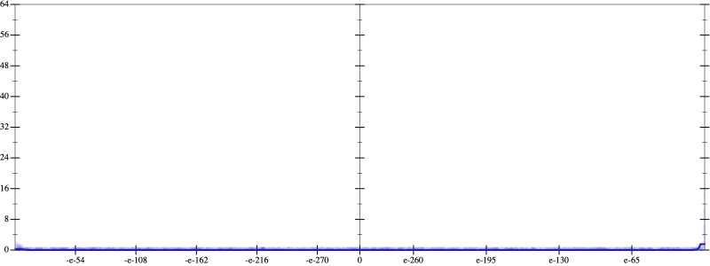
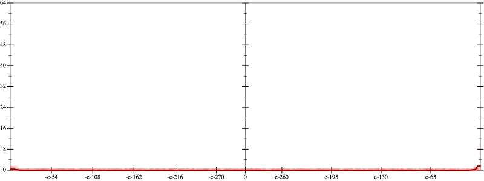
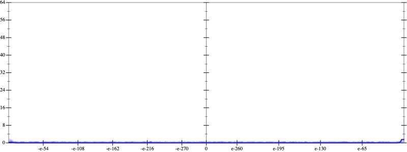

Initial program 0.0
\[\left(\left(\left(\left(\left(\left(\left(\left(\left(\left(\left(\left(\left(\left(\left(\left(\left(\left(1.0 + -39.0 \cdot x\right) + 370.5 \cdot \left(x \cdot x\right)\right) + -1523.166667 \cdot \left(\left(x \cdot x\right) \cdot x\right)\right) + 3427.125 \cdot \left(\left(\left(x \cdot x\right) \cdot x\right) \cdot x\right)\right) + -4797.975 \cdot \left(\left(\left(\left(x \cdot x\right) \cdot x\right) \cdot x\right) \cdot x\right)\right) + 4531.420833 \cdot \left(\left(\left(\left(\left(x \cdot x\right) \cdot x\right) \cdot x\right) \cdot x\right) \cdot x\right)\right) + -3051.773214 \cdot \left(\left(\left(\left(\left(\left(x \cdot x\right) \cdot x\right) \cdot x\right) \cdot x\right) \cdot x\right) \cdot x\right)\right) + 1525.886607 \cdot \left(\left(\left(\left(\left(\left(\left(x \cdot x\right) \cdot x\right) \cdot x\right) \cdot x\right) \cdot x\right) \cdot x\right) \cdot x\right)\right) + -583.981294 \cdot \left(\left(\left(\left(\left(\left(\left(\left(x \cdot x\right) \cdot x\right) \cdot x\right) \cdot x\right) \cdot x\right) \cdot x\right) \cdot x\right) \cdot x\right)\right) + 175.194388 \cdot \left(\left(\left(\left(\left(\left(\left(\left(\left(x \cdot x\right) \cdot x\right) \cdot x\right) \cdot x\right) \cdot x\right) \cdot x\right) \cdot x\right) \cdot x\right) \cdot x\right)\right) + -41.988738 \cdot \left(\left(\left(\left(\left(\left(\left(\left(\left(\left(x \cdot x\right) \cdot x\right) \cdot x\right) \cdot x\right) \cdot x\right) \cdot x\right) \cdot x\right) \cdot x\right) \cdot x\right) \cdot x\right)\right) + 8.164477 \cdot \left(\left(\left(\left(\left(\left(\left(\left(\left(\left(\left(x \cdot x\right) \cdot x\right) \cdot x\right) \cdot x\right) \cdot x\right) \cdot x\right) \cdot x\right) \cdot x\right) \cdot x\right) \cdot x\right) \cdot x\right)\right) + -1.304384 \cdot \left(\left(\left(\left(\left(\left(\left(\left(\left(\left(\left(\left(x \cdot x\right) \cdot x\right) \cdot x\right) \cdot x\right) \cdot x\right) \cdot x\right) \cdot x\right) \cdot x\right) \cdot x\right) \cdot x\right) \cdot x\right) \cdot x\right)\right) + 0.173031 \cdot \left(\left(\left(\left(\left(\left(\left(\left(\left(\left(\left(\left(\left(x \cdot x\right) \cdot x\right) \cdot x\right) \cdot x\right) \cdot x\right) \cdot x\right) \cdot x\right) \cdot x\right) \cdot x\right) \cdot x\right) \cdot x\right) \cdot x\right) \cdot x\right)\right) + -0.019226 \cdot \left(\left(\left(\left(\left(\left(\left(\left(\left(\left(\left(\left(\left(\left(x \cdot x\right) \cdot x\right) \cdot x\right) \cdot x\right) \cdot x\right) \cdot x\right) \cdot x\right) \cdot x\right) \cdot x\right) \cdot x\right) \cdot x\right) \cdot x\right) \cdot x\right) \cdot x\right)\right) + 0.001802 \cdot \left(\left(\left(\left(\left(\left(\left(\left(\left(\left(\left(\left(\left(\left(\left(x \cdot x\right) \cdot x\right) \cdot x\right) \cdot x\right) \cdot x\right) \cdot x\right) \cdot x\right) \cdot x\right) \cdot x\right) \cdot x\right) \cdot x\right) \cdot x\right) \cdot x\right) \cdot x\right) \cdot x\right)\right) + -0.000143 \cdot \left(\left(\left(\left(\left(\left(\left(\left(\left(\left(\left(\left(\left(\left(\left(\left(x \cdot x\right) \cdot x\right) \cdot x\right) \cdot x\right) \cdot x\right) \cdot x\right) \cdot x\right) \cdot x\right) \cdot x\right) \cdot x\right) \cdot x\right) \cdot x\right) \cdot x\right) \cdot x\right) \cdot x\right) \cdot x\right)\right) + 10^{-05} \cdot \left(\left(\left(\left(\left(\left(\left(\left(\left(\left(\left(\left(\left(\left(\left(\left(\left(x \cdot x\right) \cdot x\right) \cdot x\right) \cdot x\right) \cdot x\right) \cdot x\right) \cdot x\right) \cdot x\right) \cdot x\right) \cdot x\right) \cdot x\right) \cdot x\right) \cdot x\right) \cdot x\right) \cdot x\right) \cdot x\right) \cdot x\right)\right) + -1 \cdot 10^{-06} \cdot \left(\left(\left(\left(\left(\left(\left(\left(\left(\left(\left(\left(\left(\left(\left(\left(\left(\left(x \cdot x\right) \cdot x\right) \cdot x\right) \cdot x\right) \cdot x\right) \cdot x\right) \cdot x\right) \cdot x\right) \cdot x\right) \cdot x\right) \cdot x\right) \cdot x\right) \cdot x\right) \cdot x\right) \cdot x\right) \cdot x\right) \cdot x\right) \cdot x\right)\]
Applied simplify0.0
\[\leadsto \color{blue}{\left(\left(\left(\left(\left(\left(\left(-1523.166667 \cdot x\right) \cdot \left(x \cdot x\right) + 1.0\right) + x \cdot \left(-39.0 + x \cdot 370.5\right)\right) + \left(\left(3427.125 \cdot x\right) \cdot {x}^{3} + \left(-4797.975 \cdot x\right) \cdot \left(\left(x \cdot x\right) \cdot \left(x \cdot x\right)\right)\right)\right) + \left(\left(\left(-3051.773214 \cdot x\right) \cdot \left({x}^{3} \cdot {x}^{3}\right) + \left(\left(x \cdot x\right) \cdot \left(x \cdot x\right)\right) \cdot \left(\left(x \cdot x\right) \cdot 4531.420833\right)\right) + \left({x}^{3} \cdot {x}^{3}\right) \cdot \left(\left(x \cdot x\right) \cdot 1525.886607\right)\right)\right) + \left(\left(\left(-583.981294 \cdot x\right) \cdot \left(\left(\left(x \cdot x\right) \cdot \left(x \cdot x\right)\right) \cdot \left(\left(x \cdot x\right) \cdot \left(x \cdot x\right)\right)\right) + \left(\left(\left(x \cdot x\right) \cdot \left(x \cdot x\right)\right) \cdot \left(\left(x \cdot x\right) \cdot \left(x \cdot x\right)\right)\right) \cdot \left(\left(x \cdot x\right) \cdot 175.194388\right)\right) + \left(\left(\left({x}^{3} \cdot {x}^{3}\right) \cdot {x}^{3}\right) \cdot \left(\left(x \cdot x\right) \cdot -41.988738\right) + \left(\left({x}^{3} \cdot {x}^{3}\right) \cdot \left(\left(x \cdot x\right) \cdot \left(x \cdot x\right)\right)\right) \cdot \left(\left(x \cdot x\right) \cdot 8.164477\right)\right)\right)\right) + \left(\left(\left(\left(\left(\left(x \cdot x\right) \cdot \left(x \cdot x\right)\right) \cdot \left(\left(x \cdot x\right) \cdot \left(x \cdot x\right)\right)\right) \cdot \left(\left(x \cdot x\right) \cdot \left(x \cdot x\right)\right)\right) \cdot \left(\left(x \cdot x\right) \cdot 0.173031\right) + \left(\left(\left(\left(x \cdot x\right) \cdot \left(x \cdot x\right)\right) \cdot \left(\left(x \cdot x\right) \cdot \left(x \cdot x\right)\right)\right) \cdot \left(\left(x \cdot x\right) \cdot \left(x \cdot x\right)\right)\right) \cdot \left(x \cdot -1.304384\right)\right) + \left(\left(\left({x}^{3} \cdot {x}^{3}\right) \cdot \left(\left(x \cdot x\right) \cdot \left(x \cdot x\right)\right)\right) \cdot \left(\left(x \cdot x\right) \cdot \left(x \cdot x\right)\right)\right) \cdot \left(x \cdot -0.019226\right)\right)\right) + \left(\left(\left(-0.000143 \cdot x\right) \cdot \left(\left(\left(\left(\left(x \cdot x\right) \cdot \left(x \cdot x\right)\right) \cdot \left(\left(x \cdot x\right) \cdot \left(x \cdot x\right)\right)\right) \cdot \left(\left(x \cdot x\right) \cdot \left(x \cdot x\right)\right)\right) \cdot \left(\left(x \cdot x\right) \cdot \left(x \cdot x\right)\right)\right) + \left(\left(\left({x}^{3} \cdot {x}^{3}\right) \cdot \left(\left(x \cdot x\right) \cdot \left(x \cdot x\right)\right)\right) \cdot \left(\left(x \cdot x\right) \cdot \left(x \cdot x\right)\right)\right) \cdot \left(\left(x \cdot x\right) \cdot 0.001802\right)\right) + \left(\left(\left(\left(\left(\left(x \cdot x\right) \cdot \left(x \cdot x\right)\right) \cdot \left(\left(x \cdot x\right) \cdot \left(x \cdot x\right)\right)\right) \cdot \left(\left(x \cdot x\right) \cdot \left(x \cdot x\right)\right)\right) \cdot \left(\left(x \cdot x\right) \cdot \left(x \cdot x\right)\right)\right) \cdot \left(\left(x \cdot x\right) \cdot 10^{-05}\right) + \left(\left(\left(\left({x}^{3} \cdot {x}^{3}\right) \cdot {x}^{3}\right) \cdot \left(\left(x \cdot x\right) \cdot \left(x \cdot x\right)\right)\right) \cdot \left(\left(x \cdot x\right) \cdot \left(x \cdot x\right)\right)\right) \cdot \left(\left(x \cdot x\right) \cdot -1 \cdot 10^{-06}\right)\right)\right)}\]
Taylor expanded around 0 0.0
\[\leadsto \left(\left(\left(\left(\left(\left(\left(-1523.166667 \cdot x\right) \cdot \left(x \cdot x\right) + 1.0\right) + x \cdot \left(-39.0 + x \cdot 370.5\right)\right) + \left(\left(3427.125 \cdot x\right) \cdot {x}^{3} + \left(-4797.975 \cdot x\right) \cdot \left(\left(x \cdot x\right) \cdot \left(x \cdot x\right)\right)\right)\right) + \left(\left(\left(-3051.773214 \cdot x\right) \cdot \left({x}^{3} \cdot {x}^{3}\right) + \left(\left(x \cdot x\right) \cdot \left(x \cdot x\right)\right) \cdot \left(\left(x \cdot x\right) \cdot 4531.420833\right)\right) + \left({x}^{3} \cdot {x}^{3}\right) \cdot \left(\left(x \cdot x\right) \cdot 1525.886607\right)\right)\right) + \left(\left(\left(-583.981294 \cdot x\right) \cdot \left(\left(\left(x \cdot x\right) \cdot \left(x \cdot x\right)\right) \cdot \left(\left(x \cdot x\right) \cdot \left(x \cdot x\right)\right)\right) + \left(\left(\left(x \cdot x\right) \cdot \left(x \cdot x\right)\right) \cdot \left(\left(x \cdot x\right) \cdot \left(x \cdot x\right)\right)\right) \cdot \color{blue}{\left(175.194388 \cdot {x}^{2}\right)}\right) + \left(\left(\left({x}^{3} \cdot {x}^{3}\right) \cdot {x}^{3}\right) \cdot \left(\left(x \cdot x\right) \cdot -41.988738\right) + \left(\left({x}^{3} \cdot {x}^{3}\right) \cdot \left(\left(x \cdot x\right) \cdot \left(x \cdot x\right)\right)\right) \cdot \left(\left(x \cdot x\right) \cdot 8.164477\right)\right)\right)\right) + \left(\left(\left(\left(\left(\left(x \cdot x\right) \cdot \left(x \cdot x\right)\right) \cdot \left(\left(x \cdot x\right) \cdot \left(x \cdot x\right)\right)\right) \cdot \left(\left(x \cdot x\right) \cdot \left(x \cdot x\right)\right)\right) \cdot \left(\left(x \cdot x\right) \cdot 0.173031\right) + \left(\left(\left(\left(x \cdot x\right) \cdot \left(x \cdot x\right)\right) \cdot \left(\left(x \cdot x\right) \cdot \left(x \cdot x\right)\right)\right) \cdot \left(\left(x \cdot x\right) \cdot \left(x \cdot x\right)\right)\right) \cdot \left(x \cdot -1.304384\right)\right) + \left(\left(\left({x}^{3} \cdot {x}^{3}\right) \cdot \left(\left(x \cdot x\right) \cdot \left(x \cdot x\right)\right)\right) \cdot \left(\left(x \cdot x\right) \cdot \left(x \cdot x\right)\right)\right) \cdot \left(x \cdot -0.019226\right)\right)\right) + \left(\left(\left(-0.000143 \cdot x\right) \cdot \left(\left(\left(\left(\left(x \cdot x\right) \cdot \left(x \cdot x\right)\right) \cdot \left(\left(x \cdot x\right) \cdot \left(x \cdot x\right)\right)\right) \cdot \left(\left(x \cdot x\right) \cdot \left(x \cdot x\right)\right)\right) \cdot \left(\left(x \cdot x\right) \cdot \left(x \cdot x\right)\right)\right) + \left(\left(\left({x}^{3} \cdot {x}^{3}\right) \cdot \left(\left(x \cdot x\right) \cdot \left(x \cdot x\right)\right)\right) \cdot \left(\left(x \cdot x\right) \cdot \left(x \cdot x\right)\right)\right) \cdot \left(\left(x \cdot x\right) \cdot 0.001802\right)\right) + \left(\left(\left(\left(\left(\left(x \cdot x\right) \cdot \left(x \cdot x\right)\right) \cdot \left(\left(x \cdot x\right) \cdot \left(x \cdot x\right)\right)\right) \cdot \left(\left(x \cdot x\right) \cdot \left(x \cdot x\right)\right)\right) \cdot \left(\left(x \cdot x\right) \cdot \left(x \cdot x\right)\right)\right) \cdot \left(\left(x \cdot x\right) \cdot 10^{-05}\right) + \left(\left(\left(\left({x}^{3} \cdot {x}^{3}\right) \cdot {x}^{3}\right) \cdot \left(\left(x \cdot x\right) \cdot \left(x \cdot x\right)\right)\right) \cdot \left(\left(x \cdot x\right) \cdot \left(x \cdot x\right)\right)\right) \cdot \left(\left(x \cdot x\right) \cdot -1 \cdot 10^{-06}\right)\right)\right)\]
Applied simplify0.0
\[\leadsto \color{blue}{\left(\left(\left(\left(\left(-0.000143 \cdot x\right) \cdot \left(\left(x \cdot x\right) \cdot \left(x \cdot x\right)\right)\right) \cdot \left({\left(x \cdot x\right)}^{3} \cdot {\left(x \cdot x\right)}^{3}\right) + \left({\left(x \cdot x\right)}^{3} \cdot {\left(x \cdot x\right)}^{3}\right) \cdot \left(\left(x \cdot x\right) \cdot \left(x \cdot \left(0.001802 \cdot x\right)\right)\right)\right) + \left(\left({\left(x \cdot x\right)}^{3} \cdot {\left(x \cdot x\right)}^{3}\right) \cdot \left(\left(x \cdot \left(10^{-05} \cdot x\right)\right) \cdot \left(\left(x \cdot x\right) \cdot \left(x \cdot x\right)\right)\right) + \left(\left(\left(x \cdot x\right) \cdot \left(x \cdot x\right)\right) \cdot \left(-1 \cdot 10^{-06} \cdot \left(x \cdot x\right)\right)\right) \cdot \left(\left(\left(x \cdot x\right) \cdot \left(x \cdot x\right)\right) \cdot {\left({x}^{3}\right)}^{3}\right)\right)\right) + \left(\left(\left(\left(x \cdot x\right) \cdot \left(x \cdot x\right)\right) \cdot \left(x \cdot \left(x \cdot 4531.420833\right)\right) + \left({\left(x \cdot x\right)}^{3} \cdot \left(x \cdot -3051.773214\right) + \left(1525.886607 \cdot \left(x \cdot x\right)\right) \cdot {\left(x \cdot x\right)}^{3}\right)\right) + \left(\left(\left(\left(-1523.166667 \cdot x\right) \cdot \left(x \cdot x\right) + 1.0\right) + \left(x \cdot 370.5 + -39.0\right) \cdot x\right) + \left(\left(-4797.975 \cdot x\right) \cdot \left(\left(x \cdot x\right) \cdot \left(x \cdot x\right)\right) + \left(3427.125 \cdot x\right) \cdot {x}^{3}\right)\right)\right)\right) + \left(\left(\left(x \cdot \left(x \cdot 0.173031 + -1.304384\right)\right) \cdot \left({\left(x \cdot x\right)}^{3} \cdot {\left(x \cdot x\right)}^{3}\right) + \left({\left(x \cdot x\right)}^{3} \cdot {\left(x \cdot x\right)}^{3}\right) \cdot \left(\left(x \cdot x\right) \cdot \left(-0.019226 \cdot x\right)\right)\right) + \left({\left(x \cdot x\right)}^{3} \cdot \left(\left(\left(x \cdot x\right) \cdot \left(x \cdot x\right)\right) \cdot \left(x \cdot -41.988738\right) + \left(\left(x \cdot x\right) \cdot \left(x \cdot x\right)\right) \cdot \left(x \cdot \left(x \cdot 8.164477\right)\right)\right) + \left(\left(\left(x \cdot x\right) \cdot \left(x \cdot x\right)\right) \cdot \left(\left(x \cdot x\right) \cdot \left(x \cdot x\right)\right)\right) \cdot \left(-583.981294 \cdot x + x \cdot \left(x \cdot 175.194388\right)\right)\right)\right)}\]
- Using strategy
rm Applied pow20.0
\[\leadsto \left(\left(\left(\left(\left(-0.000143 \cdot x\right) \cdot \left(\left(x \cdot x\right) \cdot \left(x \cdot x\right)\right)\right) \cdot \left({\left(x \cdot x\right)}^{3} \cdot {\left(x \cdot x\right)}^{3}\right) + \left({\left(x \cdot x\right)}^{3} \cdot {\left(x \cdot x\right)}^{3}\right) \cdot \left(\left(x \cdot x\right) \cdot \left(x \cdot \left(0.001802 \cdot x\right)\right)\right)\right) + \left(\left({\left(x \cdot x\right)}^{3} \cdot {\left(x \cdot x\right)}^{3}\right) \cdot \left(\left(x \cdot \left(10^{-05} \cdot x\right)\right) \cdot \left(\left(x \cdot x\right) \cdot \left(x \cdot x\right)\right)\right) + \left(\left(\left(x \cdot x\right) \cdot \left(x \cdot x\right)\right) \cdot \left(-1 \cdot 10^{-06} \cdot \left(x \cdot x\right)\right)\right) \cdot \left(\left(\left(x \cdot x\right) \cdot \left(x \cdot x\right)\right) \cdot {\left({x}^{3}\right)}^{3}\right)\right)\right) + \left(\left(\left(\left(x \cdot x\right) \cdot \left(x \cdot x\right)\right) \cdot \left(x \cdot \left(x \cdot 4531.420833\right)\right) + \left({\left(x \cdot x\right)}^{3} \cdot \left(x \cdot -3051.773214\right) + \left(1525.886607 \cdot \left(x \cdot x\right)\right) \cdot {\left(x \cdot x\right)}^{3}\right)\right) + \left(\left(\left(\left(-1523.166667 \cdot x\right) \cdot \left(x \cdot x\right) + 1.0\right) + \left(x \cdot 370.5 + -39.0\right) \cdot x\right) + \left(\left(-4797.975 \cdot x\right) \cdot \left(\left(x \cdot x\right) \cdot \left(x \cdot x\right)\right) + \left(3427.125 \cdot x\right) \cdot {x}^{3}\right)\right)\right)\right) + \left(\left(\left(x \cdot \left(x \cdot 0.173031 + -1.304384\right)\right) \cdot \left({\left(x \cdot x\right)}^{3} \cdot {\left(x \cdot x\right)}^{3}\right) + \left({\left(x \cdot x\right)}^{3} \cdot {\left(x \cdot x\right)}^{3}\right) \cdot \left(\left(x \cdot x\right) \cdot \left(-0.019226 \cdot x\right)\right)\right) + \left({\left(x \cdot x\right)}^{3} \cdot \left(\left(\left(x \cdot x\right) \cdot \left(x \cdot x\right)\right) \cdot \left(x \cdot -41.988738\right) + \left(\left(x \cdot x\right) \cdot \left(x \cdot x\right)\right) \cdot \left(x \cdot \left(x \cdot 8.164477\right)\right)\right) + \left(\left(\left(x \cdot x\right) \cdot \left(x \cdot x\right)\right) \cdot \left(\left(x \cdot x\right) \cdot \color{blue}{{x}^{2}}\right)\right) \cdot \left(-583.981294 \cdot x + x \cdot \left(x \cdot 175.194388\right)\right)\right)\right)\]
Applied pow20.0
\[\leadsto \left(\left(\left(\left(\left(-0.000143 \cdot x\right) \cdot \left(\left(x \cdot x\right) \cdot \left(x \cdot x\right)\right)\right) \cdot \left({\left(x \cdot x\right)}^{3} \cdot {\left(x \cdot x\right)}^{3}\right) + \left({\left(x \cdot x\right)}^{3} \cdot {\left(x \cdot x\right)}^{3}\right) \cdot \left(\left(x \cdot x\right) \cdot \left(x \cdot \left(0.001802 \cdot x\right)\right)\right)\right) + \left(\left({\left(x \cdot x\right)}^{3} \cdot {\left(x \cdot x\right)}^{3}\right) \cdot \left(\left(x \cdot \left(10^{-05} \cdot x\right)\right) \cdot \left(\left(x \cdot x\right) \cdot \left(x \cdot x\right)\right)\right) + \left(\left(\left(x \cdot x\right) \cdot \left(x \cdot x\right)\right) \cdot \left(-1 \cdot 10^{-06} \cdot \left(x \cdot x\right)\right)\right) \cdot \left(\left(\left(x \cdot x\right) \cdot \left(x \cdot x\right)\right) \cdot {\left({x}^{3}\right)}^{3}\right)\right)\right) + \left(\left(\left(\left(x \cdot x\right) \cdot \left(x \cdot x\right)\right) \cdot \left(x \cdot \left(x \cdot 4531.420833\right)\right) + \left({\left(x \cdot x\right)}^{3} \cdot \left(x \cdot -3051.773214\right) + \left(1525.886607 \cdot \left(x \cdot x\right)\right) \cdot {\left(x \cdot x\right)}^{3}\right)\right) + \left(\left(\left(\left(-1523.166667 \cdot x\right) \cdot \left(x \cdot x\right) + 1.0\right) + \left(x \cdot 370.5 + -39.0\right) \cdot x\right) + \left(\left(-4797.975 \cdot x\right) \cdot \left(\left(x \cdot x\right) \cdot \left(x \cdot x\right)\right) + \left(3427.125 \cdot x\right) \cdot {x}^{3}\right)\right)\right)\right) + \left(\left(\left(x \cdot \left(x \cdot 0.173031 + -1.304384\right)\right) \cdot \left({\left(x \cdot x\right)}^{3} \cdot {\left(x \cdot x\right)}^{3}\right) + \left({\left(x \cdot x\right)}^{3} \cdot {\left(x \cdot x\right)}^{3}\right) \cdot \left(\left(x \cdot x\right) \cdot \left(-0.019226 \cdot x\right)\right)\right) + \left({\left(x \cdot x\right)}^{3} \cdot \left(\left(\left(x \cdot x\right) \cdot \left(x \cdot x\right)\right) \cdot \left(x \cdot -41.988738\right) + \left(\left(x \cdot x\right) \cdot \left(x \cdot x\right)\right) \cdot \left(x \cdot \left(x \cdot 8.164477\right)\right)\right) + \left(\left(\left(x \cdot x\right) \cdot \left(x \cdot x\right)\right) \cdot \left(\color{blue}{{x}^{2}} \cdot {x}^{2}\right)\right) \cdot \left(-583.981294 \cdot x + x \cdot \left(x \cdot 175.194388\right)\right)\right)\right)\]
Applied pow-prod-up0.0
\[\leadsto \left(\left(\left(\left(\left(-0.000143 \cdot x\right) \cdot \left(\left(x \cdot x\right) \cdot \left(x \cdot x\right)\right)\right) \cdot \left({\left(x \cdot x\right)}^{3} \cdot {\left(x \cdot x\right)}^{3}\right) + \left({\left(x \cdot x\right)}^{3} \cdot {\left(x \cdot x\right)}^{3}\right) \cdot \left(\left(x \cdot x\right) \cdot \left(x \cdot \left(0.001802 \cdot x\right)\right)\right)\right) + \left(\left({\left(x \cdot x\right)}^{3} \cdot {\left(x \cdot x\right)}^{3}\right) \cdot \left(\left(x \cdot \left(10^{-05} \cdot x\right)\right) \cdot \left(\left(x \cdot x\right) \cdot \left(x \cdot x\right)\right)\right) + \left(\left(\left(x \cdot x\right) \cdot \left(x \cdot x\right)\right) \cdot \left(-1 \cdot 10^{-06} \cdot \left(x \cdot x\right)\right)\right) \cdot \left(\left(\left(x \cdot x\right) \cdot \left(x \cdot x\right)\right) \cdot {\left({x}^{3}\right)}^{3}\right)\right)\right) + \left(\left(\left(\left(x \cdot x\right) \cdot \left(x \cdot x\right)\right) \cdot \left(x \cdot \left(x \cdot 4531.420833\right)\right) + \left({\left(x \cdot x\right)}^{3} \cdot \left(x \cdot -3051.773214\right) + \left(1525.886607 \cdot \left(x \cdot x\right)\right) \cdot {\left(x \cdot x\right)}^{3}\right)\right) + \left(\left(\left(\left(-1523.166667 \cdot x\right) \cdot \left(x \cdot x\right) + 1.0\right) + \left(x \cdot 370.5 + -39.0\right) \cdot x\right) + \left(\left(-4797.975 \cdot x\right) \cdot \left(\left(x \cdot x\right) \cdot \left(x \cdot x\right)\right) + \left(3427.125 \cdot x\right) \cdot {x}^{3}\right)\right)\right)\right) + \left(\left(\left(x \cdot \left(x \cdot 0.173031 + -1.304384\right)\right) \cdot \left({\left(x \cdot x\right)}^{3} \cdot {\left(x \cdot x\right)}^{3}\right) + \left({\left(x \cdot x\right)}^{3} \cdot {\left(x \cdot x\right)}^{3}\right) \cdot \left(\left(x \cdot x\right) \cdot \left(-0.019226 \cdot x\right)\right)\right) + \left({\left(x \cdot x\right)}^{3} \cdot \left(\left(\left(x \cdot x\right) \cdot \left(x \cdot x\right)\right) \cdot \left(x \cdot -41.988738\right) + \left(\left(x \cdot x\right) \cdot \left(x \cdot x\right)\right) \cdot \left(x \cdot \left(x \cdot 8.164477\right)\right)\right) + \left(\left(\left(x \cdot x\right) \cdot \left(x \cdot x\right)\right) \cdot \color{blue}{{x}^{\left(2 + 2\right)}}\right) \cdot \left(-583.981294 \cdot x + x \cdot \left(x \cdot 175.194388\right)\right)\right)\right)\]
- Using strategy
rm Applied pow20.0
\[\leadsto \left(\left(\left(\left(\left(-0.000143 \cdot x\right) \cdot \left(\left(x \cdot x\right) \cdot \left(x \cdot x\right)\right)\right) \cdot \left({\left(x \cdot x\right)}^{3} \cdot {\left(x \cdot x\right)}^{3}\right) + \left({\left(x \cdot x\right)}^{3} \cdot {\left(x \cdot x\right)}^{3}\right) \cdot \left(\left(x \cdot x\right) \cdot \left(x \cdot \left(0.001802 \cdot x\right)\right)\right)\right) + \left(\left({\left(x \cdot x\right)}^{3} \cdot {\left(x \cdot x\right)}^{3}\right) \cdot \left(\left(x \cdot \left(10^{-05} \cdot x\right)\right) \cdot \left(\left(x \cdot x\right) \cdot \left(x \cdot x\right)\right)\right) + \left(\left(\left(x \cdot x\right) \cdot \left(x \cdot x\right)\right) \cdot \left(-1 \cdot 10^{-06} \cdot \left(x \cdot x\right)\right)\right) \cdot \left(\left(\left(x \cdot x\right) \cdot \left(x \cdot x\right)\right) \cdot {\left({x}^{3}\right)}^{3}\right)\right)\right) + \left(\left(\left(\left(x \cdot x\right) \cdot \left(x \cdot x\right)\right) \cdot \left(x \cdot \left(x \cdot 4531.420833\right)\right) + \left({\left(x \cdot x\right)}^{3} \cdot \left(x \cdot -3051.773214\right) + \left(1525.886607 \cdot \left(x \cdot x\right)\right) \cdot {\left(x \cdot x\right)}^{3}\right)\right) + \left(\left(\left(\left(-1523.166667 \cdot x\right) \cdot \left(x \cdot x\right) + 1.0\right) + \left(x \cdot 370.5 + -39.0\right) \cdot x\right) + \left(\left(-4797.975 \cdot x\right) \cdot \left(\left(x \cdot x\right) \cdot \left(x \cdot x\right)\right) + \left(3427.125 \cdot x\right) \cdot {x}^{3}\right)\right)\right)\right) + \left(\left(\left(x \cdot \left(x \cdot 0.173031 + -1.304384\right)\right) \cdot \left({\left(x \cdot x\right)}^{3} \cdot {\left(x \cdot x\right)}^{3}\right) + \left({\left(x \cdot x\right)}^{3} \cdot {\left(x \cdot x\right)}^{3}\right) \cdot \left(\left(x \cdot x\right) \cdot \left(-0.019226 \cdot x\right)\right)\right) + \left({\left(x \cdot x\right)}^{3} \cdot \left(\left(\left(x \cdot x\right) \cdot \left(x \cdot x\right)\right) \cdot \left(x \cdot -41.988738\right) + \left(\left(x \cdot x\right) \cdot \left(x \cdot x\right)\right) \cdot \left(x \cdot \left(x \cdot 8.164477\right)\right)\right) + \left(\left(\left(x \cdot x\right) \cdot \color{blue}{{x}^{2}}\right) \cdot {x}^{\left(2 + 2\right)}\right) \cdot \left(-583.981294 \cdot x + x \cdot \left(x \cdot 175.194388\right)\right)\right)\right)\]
Applied pow20.0
\[\leadsto \left(\left(\left(\left(\left(-0.000143 \cdot x\right) \cdot \left(\left(x \cdot x\right) \cdot \left(x \cdot x\right)\right)\right) \cdot \left({\left(x \cdot x\right)}^{3} \cdot {\left(x \cdot x\right)}^{3}\right) + \left({\left(x \cdot x\right)}^{3} \cdot {\left(x \cdot x\right)}^{3}\right) \cdot \left(\left(x \cdot x\right) \cdot \left(x \cdot \left(0.001802 \cdot x\right)\right)\right)\right) + \left(\left({\left(x \cdot x\right)}^{3} \cdot {\left(x \cdot x\right)}^{3}\right) \cdot \left(\left(x \cdot \left(10^{-05} \cdot x\right)\right) \cdot \left(\left(x \cdot x\right) \cdot \left(x \cdot x\right)\right)\right) + \left(\left(\left(x \cdot x\right) \cdot \left(x \cdot x\right)\right) \cdot \left(-1 \cdot 10^{-06} \cdot \left(x \cdot x\right)\right)\right) \cdot \left(\left(\left(x \cdot x\right) \cdot \left(x \cdot x\right)\right) \cdot {\left({x}^{3}\right)}^{3}\right)\right)\right) + \left(\left(\left(\left(x \cdot x\right) \cdot \left(x \cdot x\right)\right) \cdot \left(x \cdot \left(x \cdot 4531.420833\right)\right) + \left({\left(x \cdot x\right)}^{3} \cdot \left(x \cdot -3051.773214\right) + \left(1525.886607 \cdot \left(x \cdot x\right)\right) \cdot {\left(x \cdot x\right)}^{3}\right)\right) + \left(\left(\left(\left(-1523.166667 \cdot x\right) \cdot \left(x \cdot x\right) + 1.0\right) + \left(x \cdot 370.5 + -39.0\right) \cdot x\right) + \left(\left(-4797.975 \cdot x\right) \cdot \left(\left(x \cdot x\right) \cdot \left(x \cdot x\right)\right) + \left(3427.125 \cdot x\right) \cdot {x}^{3}\right)\right)\right)\right) + \left(\left(\left(x \cdot \left(x \cdot 0.173031 + -1.304384\right)\right) \cdot \left({\left(x \cdot x\right)}^{3} \cdot {\left(x \cdot x\right)}^{3}\right) + \left({\left(x \cdot x\right)}^{3} \cdot {\left(x \cdot x\right)}^{3}\right) \cdot \left(\left(x \cdot x\right) \cdot \left(-0.019226 \cdot x\right)\right)\right) + \left({\left(x \cdot x\right)}^{3} \cdot \left(\left(\left(x \cdot x\right) \cdot \left(x \cdot x\right)\right) \cdot \left(x \cdot -41.988738\right) + \left(\left(x \cdot x\right) \cdot \left(x \cdot x\right)\right) \cdot \left(x \cdot \left(x \cdot 8.164477\right)\right)\right) + \left(\left(\color{blue}{{x}^{2}} \cdot {x}^{2}\right) \cdot {x}^{\left(2 + 2\right)}\right) \cdot \left(-583.981294 \cdot x + x \cdot \left(x \cdot 175.194388\right)\right)\right)\right)\]
Applied pow-prod-up0.0
\[\leadsto \left(\left(\left(\left(\left(-0.000143 \cdot x\right) \cdot \left(\left(x \cdot x\right) \cdot \left(x \cdot x\right)\right)\right) \cdot \left({\left(x \cdot x\right)}^{3} \cdot {\left(x \cdot x\right)}^{3}\right) + \left({\left(x \cdot x\right)}^{3} \cdot {\left(x \cdot x\right)}^{3}\right) \cdot \left(\left(x \cdot x\right) \cdot \left(x \cdot \left(0.001802 \cdot x\right)\right)\right)\right) + \left(\left({\left(x \cdot x\right)}^{3} \cdot {\left(x \cdot x\right)}^{3}\right) \cdot \left(\left(x \cdot \left(10^{-05} \cdot x\right)\right) \cdot \left(\left(x \cdot x\right) \cdot \left(x \cdot x\right)\right)\right) + \left(\left(\left(x \cdot x\right) \cdot \left(x \cdot x\right)\right) \cdot \left(-1 \cdot 10^{-06} \cdot \left(x \cdot x\right)\right)\right) \cdot \left(\left(\left(x \cdot x\right) \cdot \left(x \cdot x\right)\right) \cdot {\left({x}^{3}\right)}^{3}\right)\right)\right) + \left(\left(\left(\left(x \cdot x\right) \cdot \left(x \cdot x\right)\right) \cdot \left(x \cdot \left(x \cdot 4531.420833\right)\right) + \left({\left(x \cdot x\right)}^{3} \cdot \left(x \cdot -3051.773214\right) + \left(1525.886607 \cdot \left(x \cdot x\right)\right) \cdot {\left(x \cdot x\right)}^{3}\right)\right) + \left(\left(\left(\left(-1523.166667 \cdot x\right) \cdot \left(x \cdot x\right) + 1.0\right) + \left(x \cdot 370.5 + -39.0\right) \cdot x\right) + \left(\left(-4797.975 \cdot x\right) \cdot \left(\left(x \cdot x\right) \cdot \left(x \cdot x\right)\right) + \left(3427.125 \cdot x\right) \cdot {x}^{3}\right)\right)\right)\right) + \left(\left(\left(x \cdot \left(x \cdot 0.173031 + -1.304384\right)\right) \cdot \left({\left(x \cdot x\right)}^{3} \cdot {\left(x \cdot x\right)}^{3}\right) + \left({\left(x \cdot x\right)}^{3} \cdot {\left(x \cdot x\right)}^{3}\right) \cdot \left(\left(x \cdot x\right) \cdot \left(-0.019226 \cdot x\right)\right)\right) + \left({\left(x \cdot x\right)}^{3} \cdot \left(\left(\left(x \cdot x\right) \cdot \left(x \cdot x\right)\right) \cdot \left(x \cdot -41.988738\right) + \left(\left(x \cdot x\right) \cdot \left(x \cdot x\right)\right) \cdot \left(x \cdot \left(x \cdot 8.164477\right)\right)\right) + \left(\color{blue}{{x}^{\left(2 + 2\right)}} \cdot {x}^{\left(2 + 2\right)}\right) \cdot \left(-583.981294 \cdot x + x \cdot \left(x \cdot 175.194388\right)\right)\right)\right)\]
 
